월가와 개인 투자자의 세 가지 차이
이 영상은 Claude에게 주식 거래를 맡기는 법을 단계별로 보여 줘요. 시작하기 전에 발표자는 왜 이게 의미 있는지부터 설명해요. 그는 경력 초반 몇 년을 JP(John Pierpont)모건에서 일하며 기관 트레이딩을 가까이서 봤고, 월가와 개인 투자자의 차이를 세 가지로 정리해요.
첫째는 데이터예요. 화면의 포커판 그림처럼, 나는 내 패 두 장만 보는데 맞은편 사람은 테이블의 모든 카드와 내 패까지 본다고 생각해 보라는 거예요. 월가는 억만장자가 어떤 종목에 큰돈을 걸었는지, 의원이 큰 발표 직전에 무엇을 샀는지 뉴스보다 먼저 알아요. 개인이 소식을 들을 즈음엔 이미 돈을 벌고 나간 뒤라는 게 발표자의 말이에요.
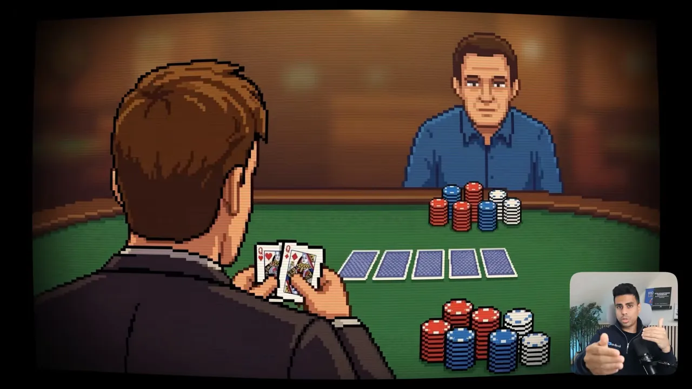
둘째는 실행이에요. 완벽한 기회를 봐도 점심을 먹느라, 혹은 10분 망설이느라 놓칠 수 있어요. 월가는 시스템이 시장을 지켜보다 자동으로 주문을 넣어요. 셋째는 판단이에요. 데이터와 속도가 있어도 계획이 없으면 의미가 없고, 큰 회사는 정보를 읽고 계산해서 결정하는 팀과 비싼 도구를 갖고 있어요.
아래 그림은 이 세 가지 차이와, 영상이 각각을 Claude로 어떻게 메우겠다고 하는지를 짝지은 거예요.
레벨 1: Claude와 Alpaca 모의투자 계좌 연결
Claude가 우리 대신 주식을 거래하려면 두 가지가 필요해요. 주문을 넣을 곳, 그리고 무엇을 살지 정할 정보예요. 이 레벨은 첫 번째를 마련해요.
예전에는 중개인에게 전화해 "IBM 50주 사 줘"라고 하면 그 사람이 거래소에서 주문을 처리했어요. 이 회사와 사람, 거래소 접근을 통틀어 증권사라고 해요. 지금은 Robinhood나 Fidelity 같은 앱 버튼 하나로 같은 일을 해요. 일부 증권사는 여기서 더 나아가 코드로 바로 주문할 수 있게 열어 두는데, 거래하는 주체가 사람이 아니라 Claude라서 이 방식이 필요해요. 영상이 고른 곳은 가입이 무료이고 API를 열어 주는 Alpaca예요.
발표자는 여기서 짚고 넘어가요. 자신은 재무 상담가가 아니고, 이건 투자 조언이 아니라 AI로 재밌는 걸 만드는 법을 보여 주는 거라고요. 그리고 영상의 모든 거래는 모의투자로 해요. 같은 종목, 같은 가격으로 움직이지만 진짜 돈은 한 푼도 걸지 않아요.
Claude 앱과 Alpaca 계좌 준비
- Claude 데스크톱 앱을 받아요 — claude.com/download에서 Windows나 Mac용을 받아요. 운영체제를 최신으로 두고, Pro나 Max 유료 플랜이면 좋다고 해요.
- Alpaca에 가입해요 — 가입을 마치면 대시보드가 나와요. 왼쪽 위 메뉴를 열면 실계좌(Individual Trading)와 모의투자(Paper) 계좌가 나뉘어 있어요.
- 모의투자 계좌를 새로 만들어요 — 발표자는 이름을 'Trading claud'로, 시작 잔고를 5만 달러로 정해요.
아래 화면이 왼쪽 위 계좌 메뉴를 연 모습이에요. 위쪽 'LIVE ACCOUNT' 아래에 실계좌, 아래쪽 'PAPER ACCOUNT' 아래에 모의 계좌들이 있고, 맨 아래 'New Paper Account' 버튼으로 새 계좌를 만들어요. 화면 윗줄의 파란 띠에도 'You are on Paper Trading, no real money is being used'라고 떠 있어요.
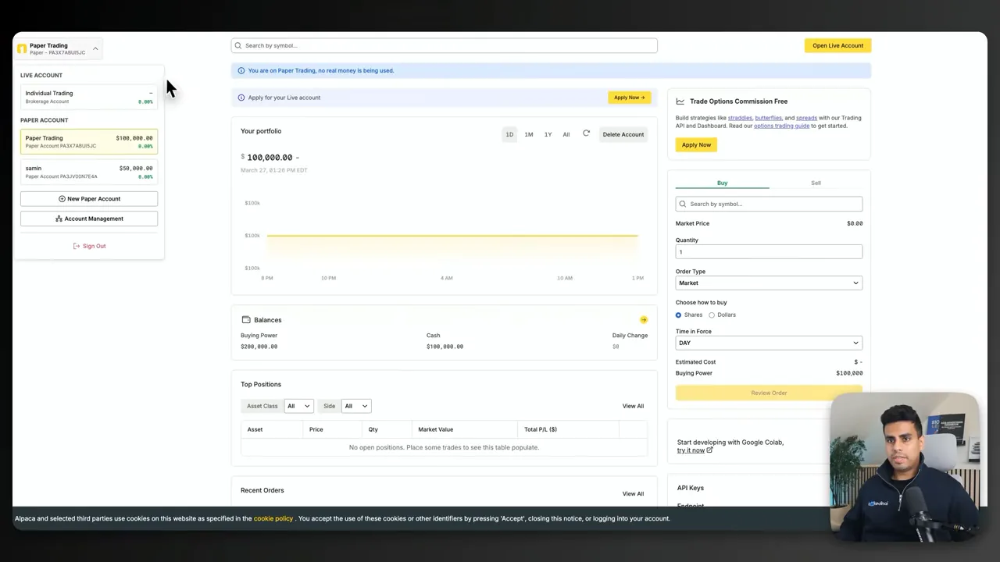
'New Paper Account'를 누르면 이름과 시작 잔고를 넣는 작은 창이 떠요. 발표자는 여기에 이름과 5만 달러를 넣고 저장해요.
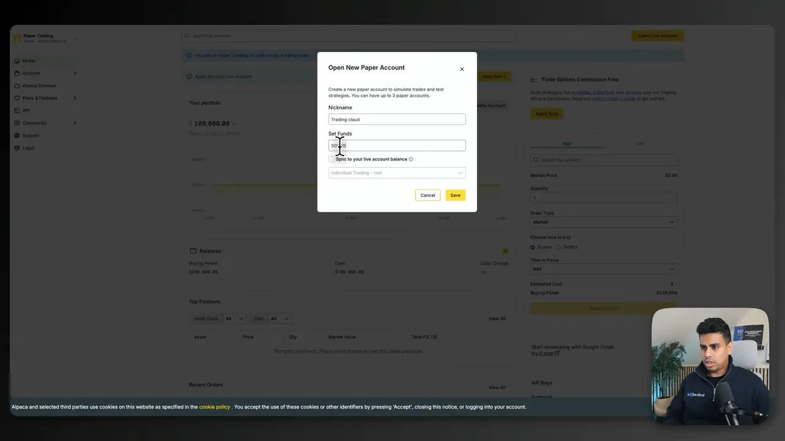
API 키를 Claude에게 넘기고 첫 주문 넣기
대시보드를 아래로 내리면 API Keys 칸이 있어요. 'Generate New API Keys'를 누르면 API 키 세트인 Endpoint, Key, Secret 세 값이 나오고, 셋 다 필요해요. 그다음 Claude 앱에서 Code 탭을 눌러요. 발표자는 대화하는 건 똑같고 화면만 조금 다르다고 설명해요. 아래 입력창 옆 버튼으로 Documents 안에 trading 폴더를 새로 만들어 작업 폴더로 정해요. 앞으로 하는 모든 작업이 이 폴더에 저장돼요. 이렇게 준비한 뒤 세 값을 입력창에 하나씩 붙여 넣어요.
연결을 확인하려고 발표자는 이렇게 말해요. "문서와 키를 줬으니 연결을 테스트하고 싶어. Apple 한 주를 사 줘." 쉬운 명령이라 속도를 위해 모델을 Sonnet으로 바꿔요. Claude가 내놓은 요약이 아래 화면이에요. 종목 AAPL(Apple Inc. 종목 코드), 매수, 1주, 시장가 주문이고, 상태는 장이 열리면 체결될 'pending_new'예요.
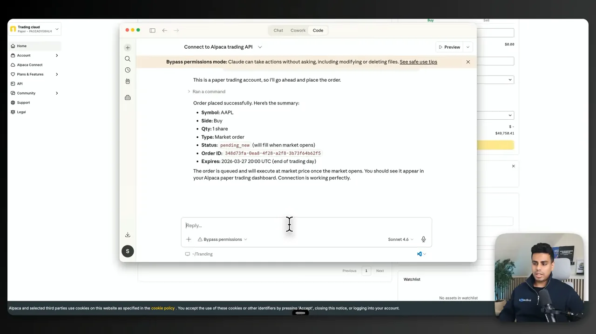
이제 "그 Apple 팔고 Tesla 한 주 사 줘"처럼 말로 거래할 수 있어요. 마지막으로 매번 키를 다시 주지 않도록, 이 폴더에 자격 증명을 저장해 달라고 해요. 아래 화면에서 Claude는 두 가지를 저장했다고 답해요. 프로젝트 폴더의 .env 파일, 그리고 이 폴더에서 열리는 다음 대화에서도 기억하도록 남긴 메모리예요.
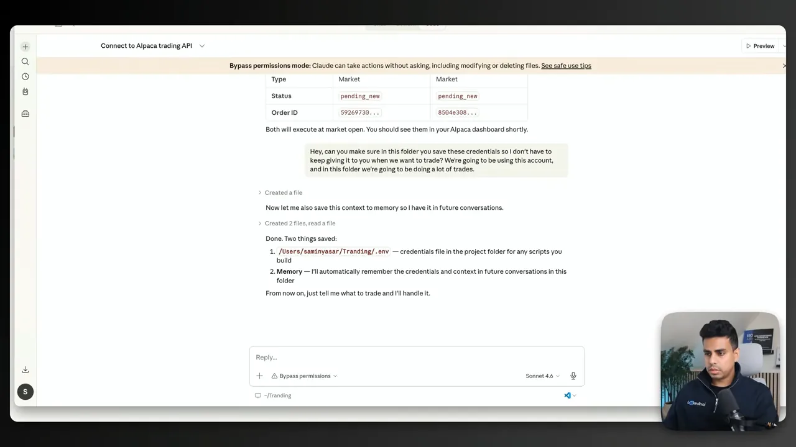
이 단계까지 Claude는 거래는 할 수 있지만 눈을 가린 채예요. 무엇을, 언제, 왜 살지 모르니까요. 빠진 건 전략이에요.
트레일링 스톱은 어떻게 손실을 막나요
이 레벨의 목표는 Claude가 스스로 시장을 보고 내가 정한 규칙대로 움직이는 봇이 되는 거예요. 발표자는 이걸 스마트 온도조절기에 비유해요. 실내가 화씨 68도(약 20도) 아래면 난방, 75도(약 24도) 위면 냉방이라는 규칙을 한 번 정하면, 휴대폰으로 하루 종일 만질 필요 없이 기계가 확인하고, 움직이고, 맞춰요. 봇도 똑같이 규칙을 정해 두고 돌아가요.
첫 전략은 많은 트레이더가 쓰는 트레일링 스톱이에요. 100달러에 산 주식에 "95달러까지 떨어지면 팔아"라는 바닥을 정해요. 이 거래에서 감수할 최대 손실이 5달러라는 뜻이에요. 화면은 이 규칙이 어떻게 흘러가는지 세 가지 경우로 보여 줘요.
이익 지키기
주가가 110달러까지 올랐는데 바닥이 여전히 95달러라면 15달러를 잃을 수도 있어요. 그래서 바닥을 105달러로 끌어올려요. 아래 그래프에서 아래쪽 빨간 점선이 처음 바닥 'Stop $95', 위쪽 점선이 올린 바닥 'New stop $105'예요. 주가가 꺾여 내려오다 새 바닥에 닿으면 'Sell $105'에서 팔려요.
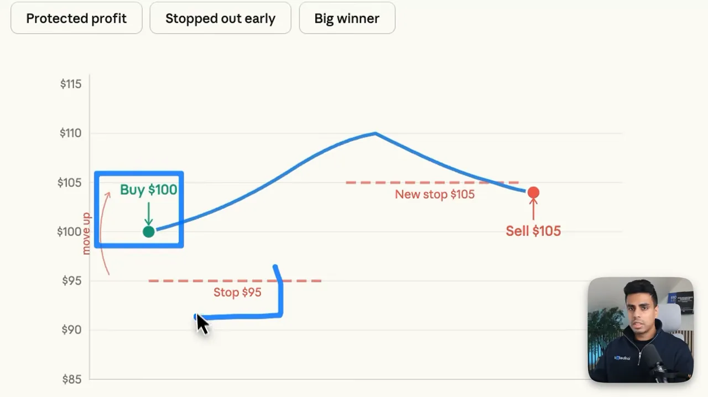
일찍 손절
사자마자 주가가 내려가면 그냥 95달러에서 팔리고 5달러를 잃어요. 그래프에서 매수점 'Buy $100'에서 바로 'Sell $95'로 내려가는 짧은 선이에요. 발표자는 이 경우가 중요하다고 해요. 손실이 감수하기로 한 만큼에서 멈췄고 돈이 남았으니, Claude가 일주일 뒤 더 싼 가격의 같은 종목이든 다른 기회든 다음 자리를 찾을 수 있다는 거예요.
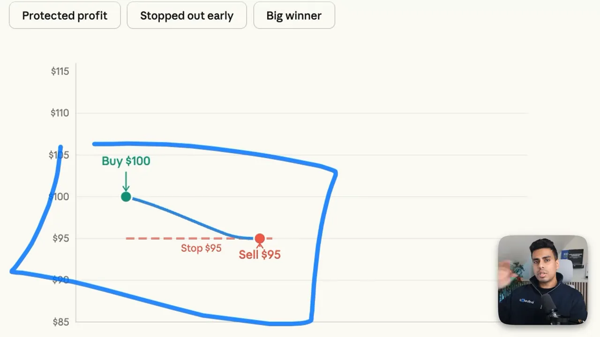
크게 이기기
주가가 계속 오르면 Claude도 바닥을 계속 끌어올려요. 그러면 처음 산 가격으로 되돌아갈 일이 없어요. 아래 그래프에서는 바닥이 'New stop $110'까지 올라가 있고, 주가가 출렁이다 그 선에 닿아 'Sell $110'에서 팔려요. 10달러, 10% 이익이에요.
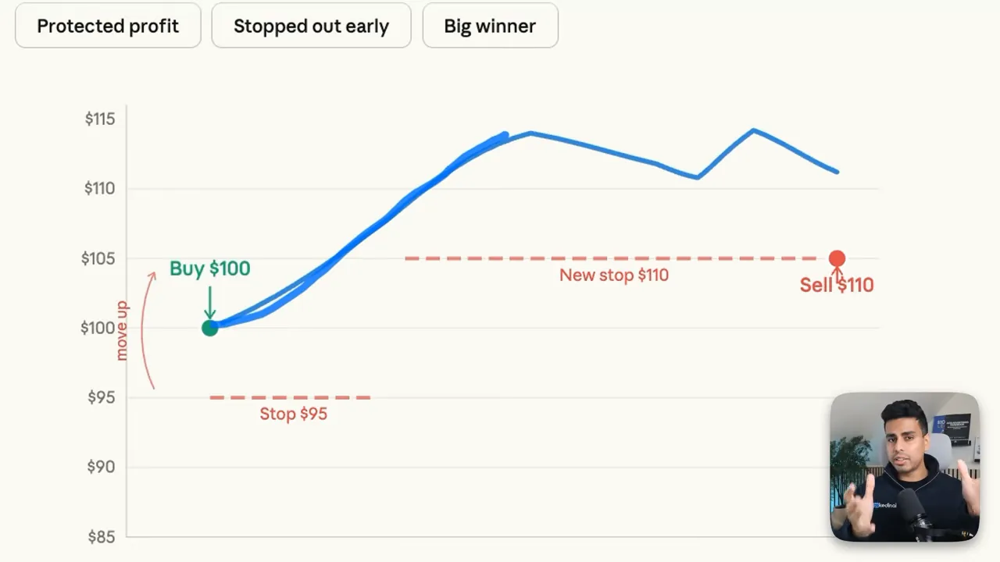
발표자가 이 설명을 길게 한 이유는 하나예요. AI에게 돈더미를 주고 "알아서 해 봐"라고 하는 게 최악이라는 거예요. 규칙은 한계가 아니라 핵심이에요. 내 감각, 감수할 수 있는 위험, 시장을 보는 관점을 규칙으로 적어 넣으면, Claude는 그걸 사람이 따라갈 수 없는 속도와 꾸준함으로 실행해요. 그냥 AI를 풀어 놓는 것과 다른 점이 여기 있어요.
It's executing your decisions, just running at the speed and discipline that you never could on your own.
Claude가 실행하는 건 내 결정이에요. 다만 혼자서는 낼 수 없는 속도와 규율로 돌아가는 거죠.
— 영상 12:02
레벨 2: Tesla 트레일링 스톱 봇과 예약 작업
설정은 간단해요. 같은 대화창에서 말로 규칙을 줘요. 발표자가 Claude에게 한 말을 정리하면 이래요.
- Alpaca 모의투자 계좌로 Tesla 10주를 지금 시장가로 사 줘.
- 바닥: 10% 떨어지면 전부 팔아. 이 거래에서 그 이상은 잃기 싫어.
- 따라 올라가는 바닥: 산 가격보다 10% 오르면 손절선을 현재가 5% 아래로 올려. 오를 때마다 또 올리고, 내리지는 마.
- 래더 매수: 크게 떨어지면 더 사. 그래야 내려갈 때 더 좋은 가격에 사지.
- 주문을 넣을 때마다 바로 요약을 보여 줘서 내가 확인할 수 있게 해 줘.
발표자 스스로 "말을 마구 쏟아냈다"고 웃을 만큼 정리되지 않은 지시였지만, Claude는 주문을 넣었어요. 아래 Alpaca 대시보드의 Recent Orders 표를 보면 위에서 둘째 줄이 TSLA(Tesla Inc. 종목 코드) 10주 시장가 매수(평균 체결가 360.27달러), 맨 윗줄이 'Stop @ $324.24' 매도 주문이에요. 324.24는 360.27보다 정확히 10% 낮은 가격이라, 첫 번째 규칙인 바닥이 걸린 거예요.
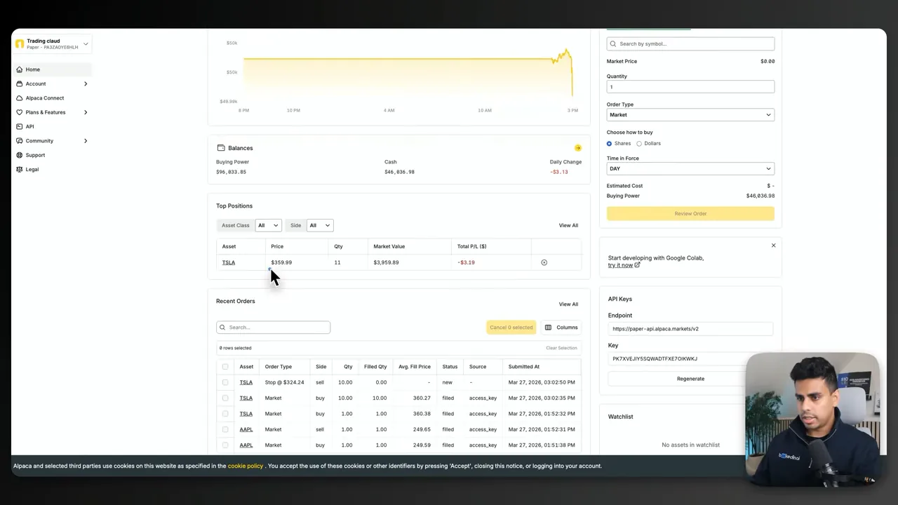
한 번 실행으로 끝내지 않기: 예약 작업
여기까지는 주문 한 번이에요. 바닥을 올리거나 다시 사려면 누군가 계속 들여다봐야 해요. 그래서 발표자는 이렇게 덧붙여요. "장중에 매일 계속 확인하면서 바닥을 올리거나 새 손절을 걸거나 다시 들어가야 할 때를 챙겨 줘. /schedule로 걸어 둬." 아래가 그 결과예요. 위쪽 표의 Schedule 칸에 'Every 5 minutes, Mon–Fri, 9:00 AM – 4:59 PM'이 보이고, 아래 번호 목록이 5분마다 하는 일이에요.
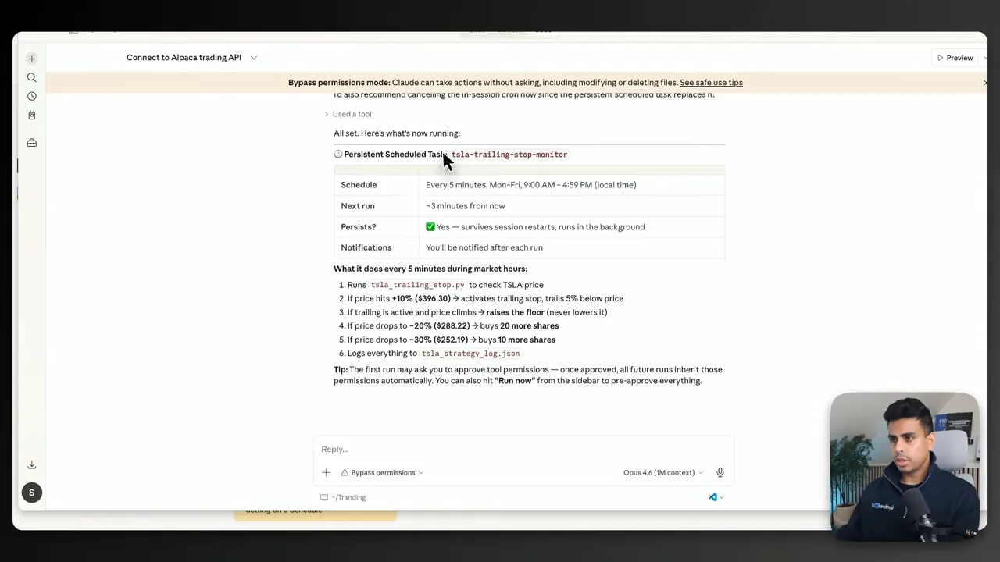
목록을 다시 정리하면, 스크립트로 TSLA 가격을 확인하고, +10%에 닿으면 가격 5% 아래를 따라가는 트레일링 스톱을 켜고, 오르면 바닥을 올리되 내리지 않고, -20%면 20주, -30%면 10주를 더 사고, 모든 걸 로그 파일에 남겨요. 아래 그림은 이 값들을 실제 가격 높이에 맞춰 그린 거예요.
왼쪽 사이드바의 시계 아이콘을 누르면 예약 작업 페이지가 열려요. 아래 화면 왼쪽 Repeats 칸에 '월~금 오전 9시부터 오후 4시 59분까지 5분마다'가 있고, 오른쪽 Instructions에는 매번 실행할 지시와 스크립트 경로가 적혀 있어요. 발표자는 자신이 손대지 않았는데 Claude가 이걸 다 만들었고, 컴퓨터가 켜져 있으면 알아서 돈다고 말해요.
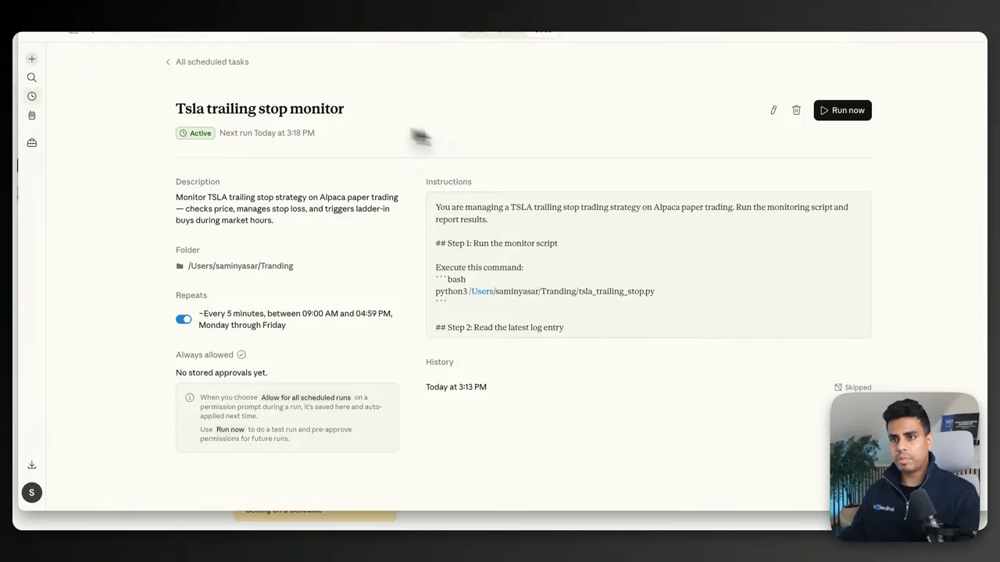
상황을 물어보며 규칙 확인하기
봇을 만든 뒤 발표자는 상황극을 해 보라고 권해요. 실제로 어떻게 움직일지 알아야 하고, 마음에 안 들면 "이렇게 바꿔"라고 말하면 되니까요. "Tesla가 갑자기 500달러가 되면 어떻게 해?"라고 묻자 Claude는 아래처럼 단계별 표로 답해요. 396.30달러에서 트레일링이 켜지고, 420·450·475·500달러를 지날 때마다 바닥이 399·427.50·451.25·475달러로 올라가요.
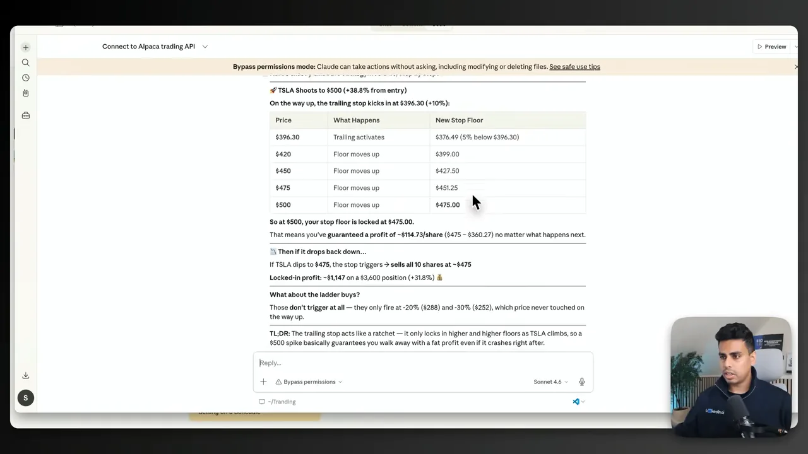
래더 매수 다시 짜기
발표자는 래더 매수가 아직 한 번도 발동하지 않았다며, 좋은 래더 단계를 생각해서 예약 작업과 전략에 반영해 달라고 해요. Claude는 원래 설정의 문제 두 가지를 먼저 짚어요. 더 깊이 떨어질수록 오히려 적게 사고(20주에서 10주로), 단계가 둘뿐이라 하락 구간을 촘촘히 받지 못한다는 거예요. 그래서 아래 표처럼 떨어질수록 더 많이 사는 4단계로 바꿔요.
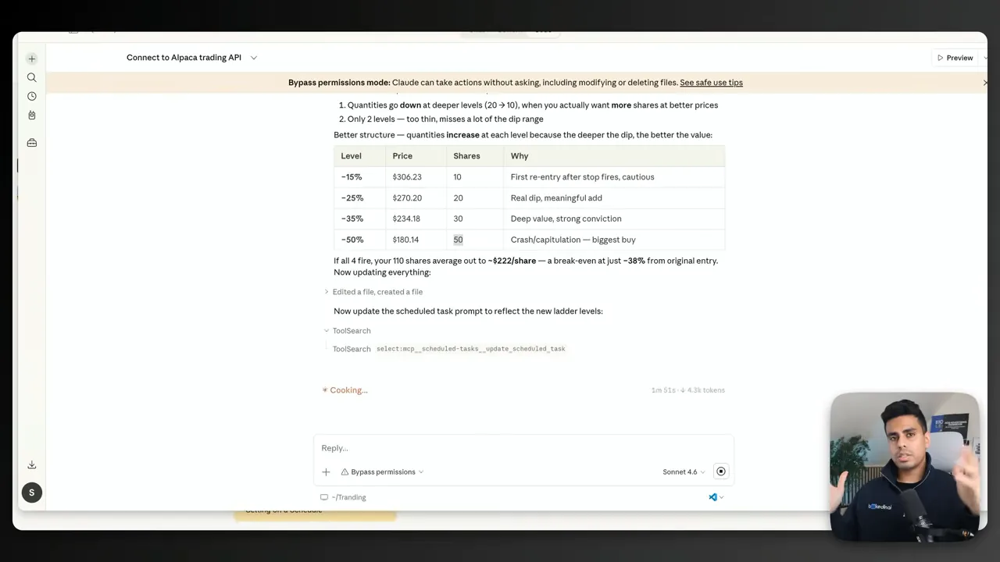
참고로 발표자는 이 부분에서 "가격이 오르면서 조금씩 사들인다"고 말하지만, 화면의 표는 모두 하락 구간(-15%~-50%)에서 사는 규칙이에요. 래더 매수는 내려갈 때 나눠 사는 방식이에요.
스마트 머니와 의원 거래 공시
지금까지 봇은 잘 돌지만 종목은 여전히 우리가 골랐어요. Tesla가 좋아서 골랐다면 그건 감이에요. 발표자는 세계 최고의 트레이더들은 감이 아니라 정보로 거래한다며, 이번 레벨에서 Claude에게 스마트 머니가 어디로 가는지 보여 주겠다고 해요.
고래와 그들이 남기는 흔적
월가에는 한 번에 수백만 달러를 움직이는 사람들이 있어요. 아래 화면 왼쪽의 작은 점들이 500달러~1만 달러를 거래하는 일반 투자자이고, 오른쪽 큰 원이 한 번에 5천만 달러를 넣는 고래예요. 그만한 돈은 동전 던지기로 넣지 않아요. 리서치 팀과 남들이 모르는 자료가 있다는 뜻이에요.
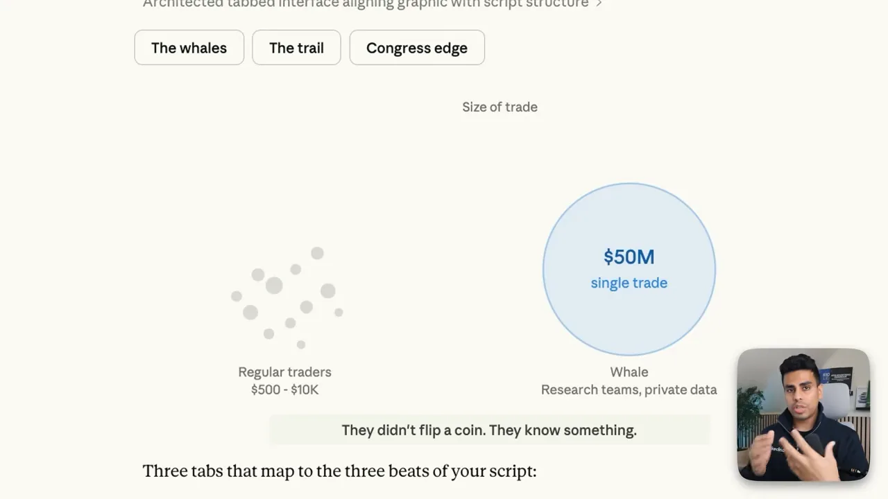
고래가 움직이면 신호가 남아요. 아래 화면의 세 상자가 그 신호예요. 왼쪽 위는 갑자기 나타나는 수백만 달러어치 콜·풋 옵션 주문, 오른쪽 위는 조용하던 종목의 거래량이 평소의 10배로 뛰는 현상, 아래는 법에 따라 신고하는 의원 거래 기록이에요.
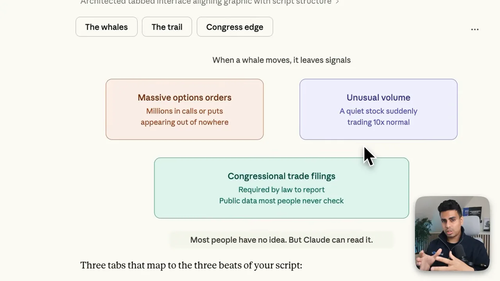
왜 의원의 거래인가
발표자는 이런 큰 움직임을 자주 보이는 집단으로 뜻밖에도 미국 의원을 꼽아요. 아래 흐름도 맨 위가 의원이고, 그 아래 세 상자가 이유예요. 위원회에서 산업 전체를 규제하고, 정책 변화를 대중보다 먼저 브리핑받고, 어느 회사가 정부 계약을 받을지 혹은 조사를 받을지 알아요. 그렇게 산 주식이 시장을 이기고, 대신 법에 따라 거래를 신고해야 해요. 마지막 칸이 'Claude가 그걸 읽고, 나는 따라 산다'예요.
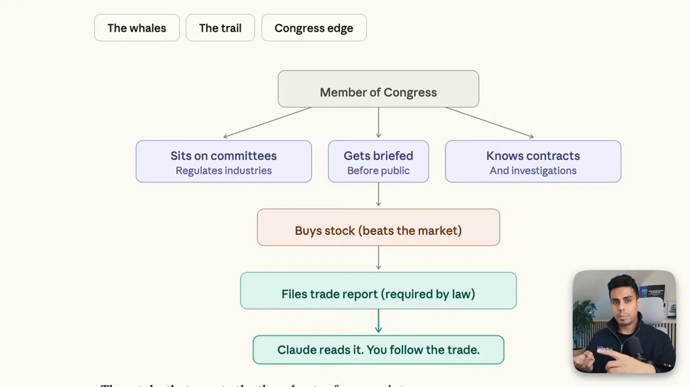
MCP: Claude를 데이터에 꽂는 콘센트
문제는 양이에요. 헤지펀드 거래, 의원 신고, 하루에도 수백만 건씩 쏟아지는 데이터를 Claude가 인터넷을 돌아다니며 다 볼 수는 없어요. 대신 이걸 하루 종일 긁어모아 정리하는 서비스가 있어요. 발표자는 MCP(Model Context Protocol)를 콘센트에 비유해요. 벽 속에 전기, 즉 내부 정보가 흐르고 있고, 우리는 Claude를 거기 꽂아 쓰기만 하면 된다는 거예요. 아래 그림 왼쪽 세 상자가 데이터 서비스(Quiver Quantitative의 의원 거래, Unusual Whales의 옵션 흐름, Finviz/SEC의 내부자 신고), 가운데가 벽의 콘센트, 오른쪽이 큰손이 보는 걸 보게 된 Claude예요.
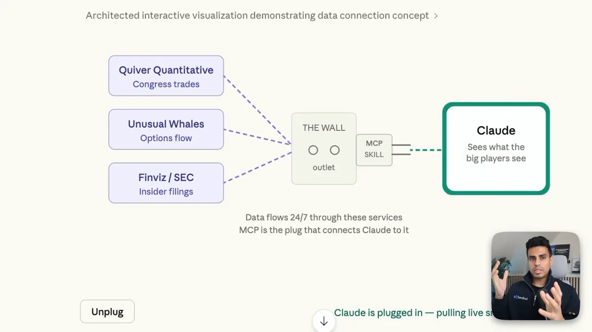
McCaul을 따라 했다면
발표자가 이 전략에 들뜬 이유를 보여 주는 화면이에요. 1년 전 5만 달러로 시작했다고 치고, 위쪽 숫자 칸을 보면 S&P 500을 사서 들고 있었을 때 57,750달러, McCaul 의원의 거래를 따라 했을 때 67,400달러(34.8%)예요. 그래프의 진한 선이 McCaul 따라 하기, 점선이 S&P 500이고, 아래 표는 그가 사고판 종목(Alphabet, Meta 등)과 각 거래의 결과예요.
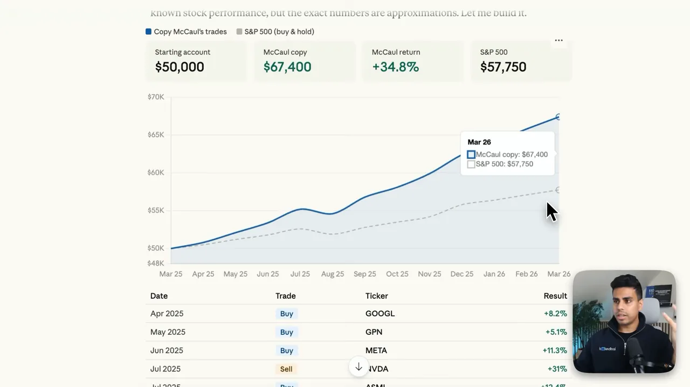
레벨 3: 의원 카피 트레이딩 봇
전략을 섞이지 않게 하려고 발표자는 다른 모의투자 계좌(samin)로 바꾸고, 같은 방법으로 키를 새로 만들어요. Claude 앱에서는 새 세션을 열어 그 키를 붙여 넣어요. 의원 거래를 볼 곳은 무료 서비스 Capitol Trades예요. 어떤 의원이 무엇을 거래하는지 볼 수 있는 사이트라서, 이 주소를 복사해 Claude에게 함께 줘요.
지시는 아래 화면 오른쪽 말풍선이에요. 이 폴더 안에 새 폴더를 만들고, ① 지금 주식 시장에서 성과가 좋고 활발하게 거래하는 의원을 찾고, ② 그 사람의 거래를 따라 하라는 내용이에요. Capitol Trades를 계속 확인하도록 크론 작업과 예약을 걸고, 사든 팔든 옵션이든 똑같이 하라고 덧붙여요. 그리고 권한 확인 없이 진행하는 bypass 모드를 켜고 실행해요.
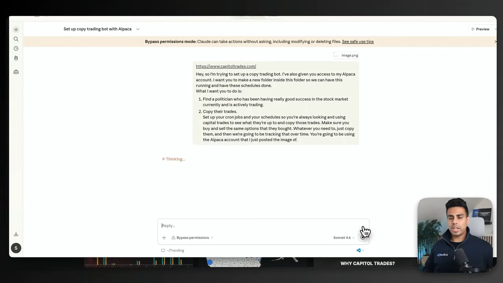
작업이 끝나자 예약 목록에 의원들의 거래를 확인하는 일정이 생겼어요. 발표자가 "누구를 따라 하고 있고 왜?"라고 묻자 Claude는 아래처럼 답해요. 맨 위에 Michael McCaul(공화당, 하원, 텍사스 14선거구)이 있고, Capitol Trades에서 긁어 온 최근 약 480건 중 매수 53건, 26개 종목, 추정 매수액 약 590만 달러라고 해요.
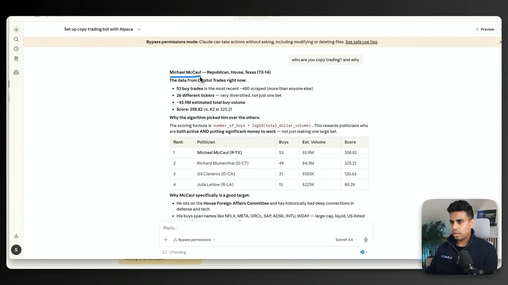
표 순위는 McCaul(358.82점), Richard Blumenthal(325.21점), Gil Cisneros, Julia Letlow 순이에요. Claude는 McCaul이 하원 외교위원회 소속으로 국방·기술 쪽에 깊은 연결이 있고, Netflix·Meta·Oracle처럼 거래가 활발한 대형 미국 종목을 산다는 점도 이유로 들었어요.
발표자도 거래 정보가 조금 늦다는 걸 인정해요. 공개 방식이 원래 그렇다는 거예요. 그래도 의원들은 데이트레이딩을 하지 않고 길게 보유하니, 늦게 알고 들어가도 이익을 얻을 수 있다고 말해요.
마지막으로 1년 시뮬레이션을 다시 보여 줘요. 아래 화면 위쪽 세 칸이 S&P 500 수익률 +15.5%, McCaul 따라 하기 +34.8%, 그리고 둘의 차이인 +9,650달러예요. 발표자는 이걸 S&P 500의 2.2배라고 설명해요.
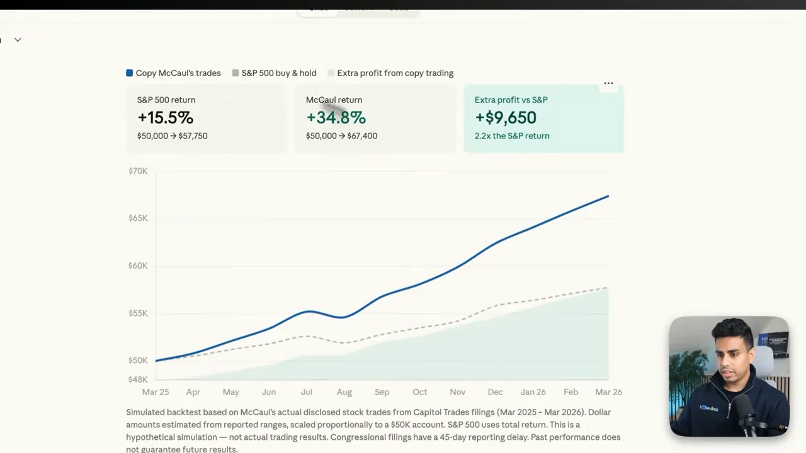
숫자 하나를 짚어 두면, 발표자는 이 대목에서 S&P 500이 약 7,000달러를 벌었다고 말하지만 앞 화면 기준으로는 57,750달러에서 시작 금액 5만 달러를 뺀 7,750달러예요. 2.2배라는 비율도 7,750달러 대비 17,400달러로 계산한 값이에요.
옵션 기초: 콜, 풋, 그리고 파는 쪽
마지막 전략은 주가가 어느 쪽으로 움직이든 돈을 받을 수 있다는 휠 전략이에요. 이걸 이해하려면 옵션부터 알아야 해서, 발표자는 먼저 옵션을 쉽게 풀어요.
옵션은 주식에 드는 보험이에요
옵션은 두 사람이 거래하기로 맺는 계약이에요. 발표자는 자동차 보험으로 시작해요. 아래 화면 위쪽처럼 운전자(You)가 보험사에 매달 100달러를 내고, 대신 사고가 나면 보상을 청구할 권리를 얻어요. 아래 두 갈래가 그 결과예요. 사고가 나면 보험이 비용을 대 주고, 사고가 없으면 보험사가 100달러를 가져가요. 보험사는 위험을 떠안는 대가로 돈을 받는 셈이에요.
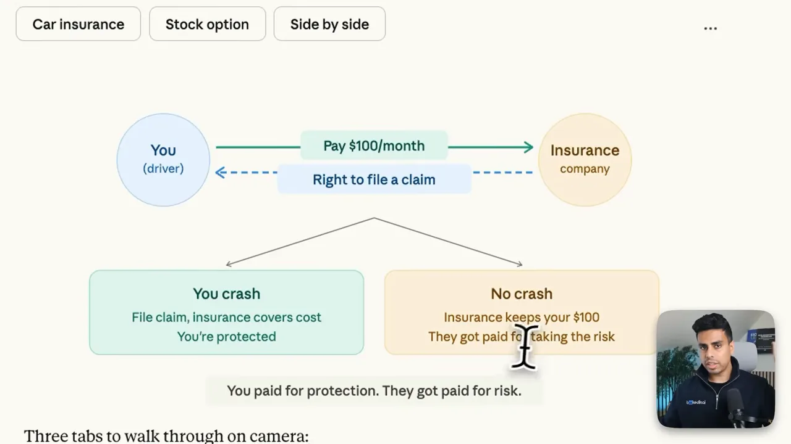
옵션도 구조가 똑같아요. 다른 트레이더에게 프리미엄을 내고, 정해진 가격에 주식을 사거나 팔 권리를 얻어요. 주가가 내 쪽으로 움직이면 계약을 행사해 이익을 내고, 아니면 계약이 만료되고 상대가 프리미엄을 가져가요. 아래 화면은 두 경우를 한 줄씩 나란히 놓은 표예요. 왼쪽이 자동차 보험, 오른쪽이 옵션이에요.
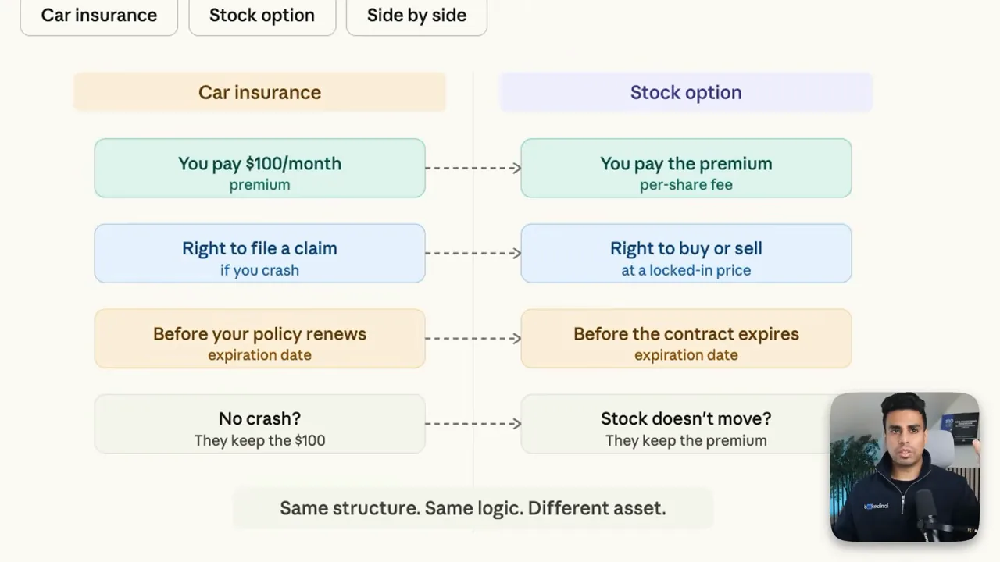
콜옵션: 정해진 가격에 살 권리
옵션은 두 종류뿐이에요. 콜옵션은 정해진 가격에 살 권리예요. 아래 그래프에서 Apple이 200달러일 때(왼쪽 아래 점) 행사가격 210달러짜리 콜을 사요. 만기 전에 230달러까지 오르면(오른쪽 위 점) 210달러에 사서 20달러 차이를 챙겨요. 210달러 아래에 머물면 계약이 만료되고, 낸 프리미엄만 잃어요. 그게 최대 손실이에요.
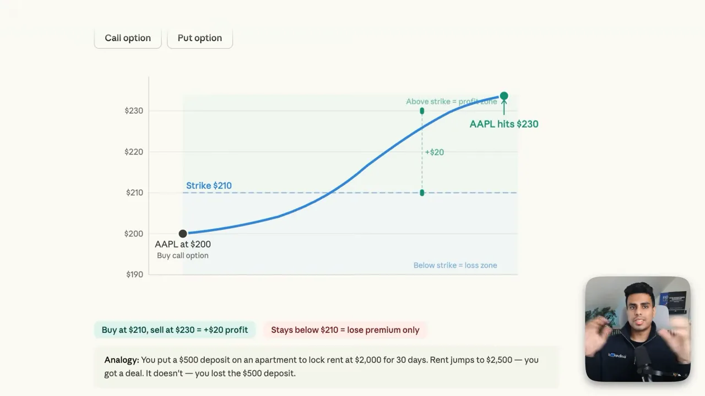
풋옵션: 정해진 가격에 팔 권리
풋옵션은 반대로 정해진 가격에 팔 권리예요. 아래 그래프에서 200달러에 산 Apple에 행사가격 190달러 풋을 사 둬요. 주가가 170달러로 떨어져도(오른쪽 아래 점) 190달러에 팔 수 있으니 20달러를 지킨 셈이에요. 하락에 대비해 프리미엄을 낸 보험이에요.
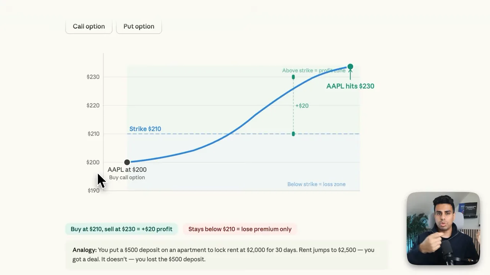
옵션을 팔면 내가 보험사가 돼요
흥미로운 건 옵션을 사는 대신 팔 수도 있다는 점이에요. 아래 화면 위쪽이 지금까지의 자리, 즉 프리미엄을 내는 매수자예요. 판을 뒤집으면 아래쪽처럼 다른 트레이더가 나에게 프리미엄을 내고, 나는 그걸 받아 지켜요.
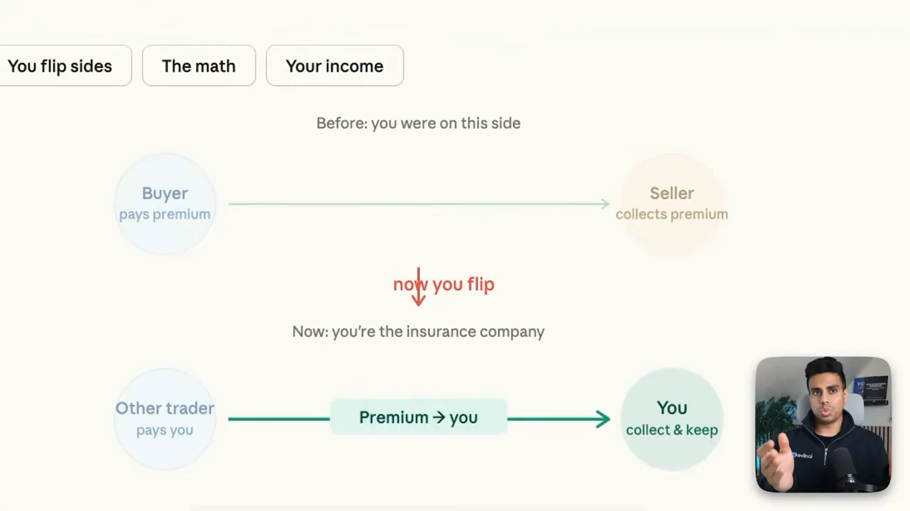
보험사는 수많은 사람에게 보험료를 받고 그중 일부에게만 보상해서 큰돈을 벌어요. 시간이 지나면 계산이 보험사에 유리하게 돌아가요. 옵션 매도도 프리미엄을 먼저 받고, 만기까지 주가가 행사가격에 닿지 않으면 계약이 사라지고 받은 돈을 다 가져요. 아래 막대그래프가 그 예시예요. 10건을 팔아 초록 막대 8개는 그냥 끝났고, 빨간 막대 2개는 보상(배정)이 났어요.
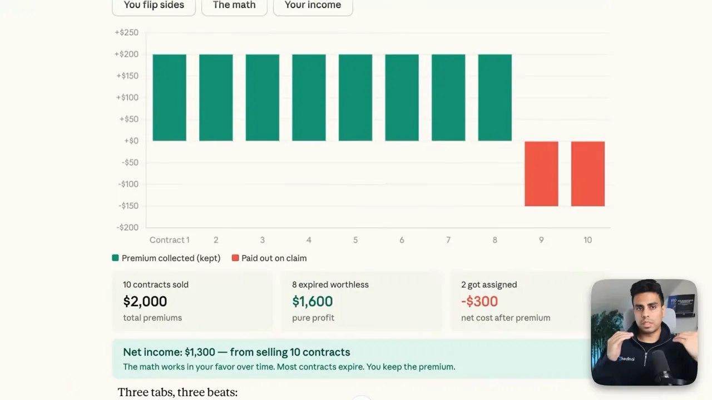
레벨 4: 휠 전략 네 단계
휠 전략은 옵션 매도 위에 세운 전략이에요. 내가 보험사가 되어 단계마다 프리미엄을 받아요. 발표자는 Tesla로 예를 들어요. Tesla가 250달러인데, 주식은 마음에 들지만 250달러를 주긴 싫고 230달러라면 사겠다는 상황이에요. 화면은 원을 네 칸으로 나눈 바퀴로 단계를 보여 줘요.
1단계: 현금 담보 풋 팔기
아래 화면 바퀴의 진한 파란 칸 'Sell put'이 지금 단계예요. 행사가격 230달러짜리 풋을 팔아요. "Tesla가 230달러로 떨어지면 내가 살게"라고 약속하는 대가로 주당 5달러, 100주면 500달러를 지금 받아요. 어차피 하고 싶던 거래를 약속만 하고 돈을 받는 거예요.
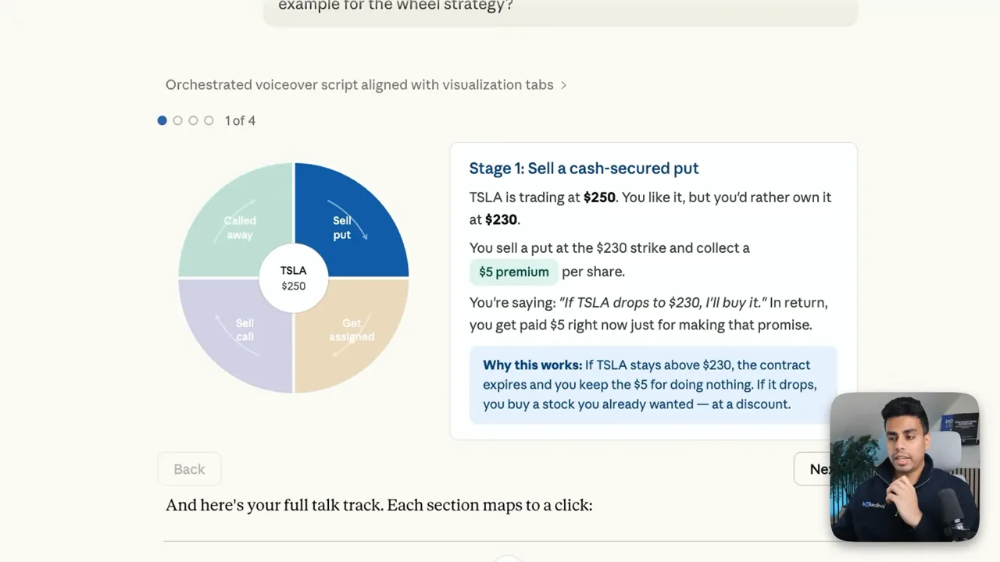
2단계: 배정받기
Tesla가 230달러 아래로 떨어지면 약속대로 230달러에 100주를 사야 해요. 이걸 배정이라고 해요. 하지만 이미 주당 5달러를 받았으니 실제 단가는 225달러예요. 아래 화면 바퀴의 주황 칸 'Get assigned'가 이 단계이고, 카드에 '실제 비용은 주당 225달러'라고 적혀 있어요.
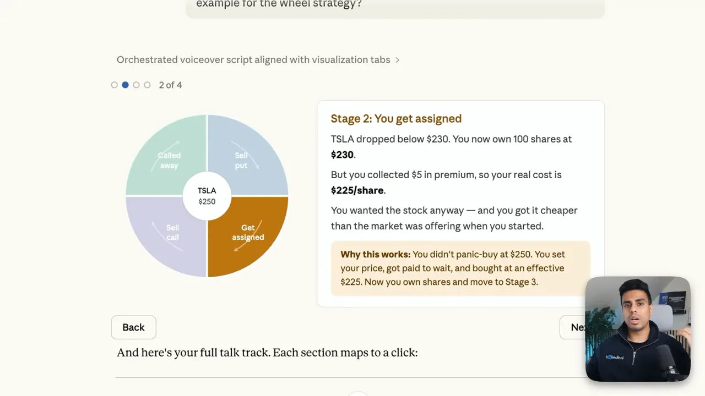
3단계: 커버드 콜 팔기
이제 계좌에 주식이 있어요. 이 주식을 담보로 행사가격 260달러짜리 콜을 팔아요. 누군가 내 Tesla를 260달러에 살 권리를 사는 대가로 또 주당 5달러, 500달러를 내요. 아래 화면 바퀴의 보라 칸 'Sell call'이 이 단계예요.
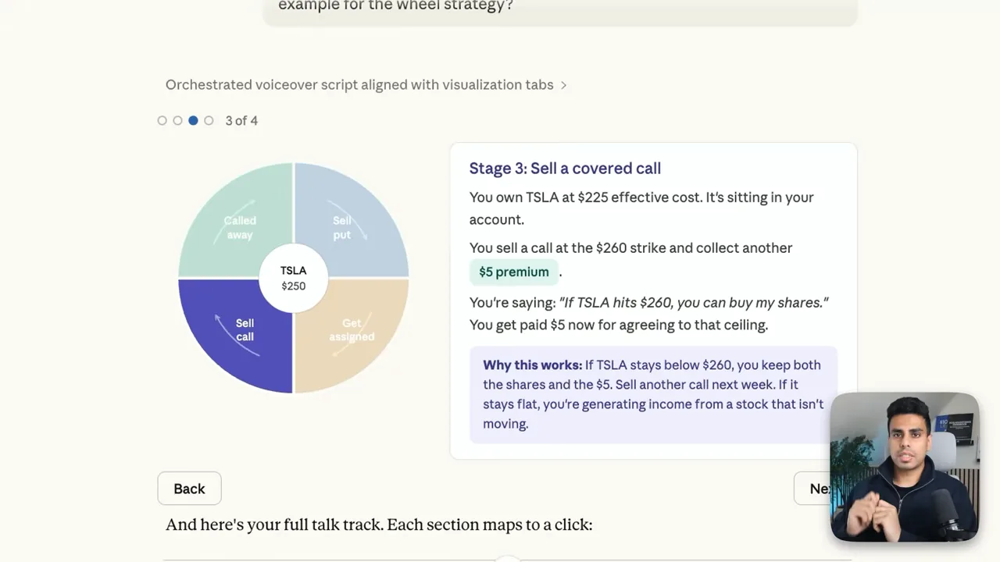
4단계: 주식 넘기고 처음으로
Tesla가 260달러를 넘으면 주식이 팔려 나가요. 아래 화면 초록 칸 'Called away'예요. 카드의 계산을 보면 풋 프리미엄 5달러, 콜 프리미엄 5달러, 주식 차익 35달러(225달러에 사서 260달러에 판 차이)를 합쳐 주당 45달러예요. 100주면 4,500달러예요.
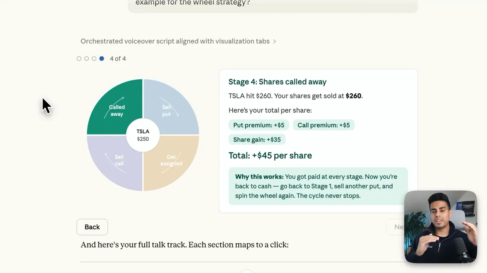
참고로 발표자는 말로는 배정과 콜 매도를 둘 다 '2단계'라고 부르지만, 화면 바퀴는 위처럼 네 단계로 나눠요. 이 문서는 화면을 따랐어요.
사람들이 휠을 포기하는 이유
휠 전략은 듣기엔 좋지만 직접 돌리면 일이 많아요. 아래 화면 왼쪽 'You do it manually'의 빨간 목록이 매주 해야 하는 일이에요. 시장 상황에 맞춰 행사가격 고르기, 실적 발표와 이벤트를 피해 만기 정하기, 계약이 행사가격에 다가가는지 지켜보기, 계약을 롤오버할지 그냥 만료시킬지 정하기, 여러 바퀴에 걸친 취득 단가 추적하기예요.
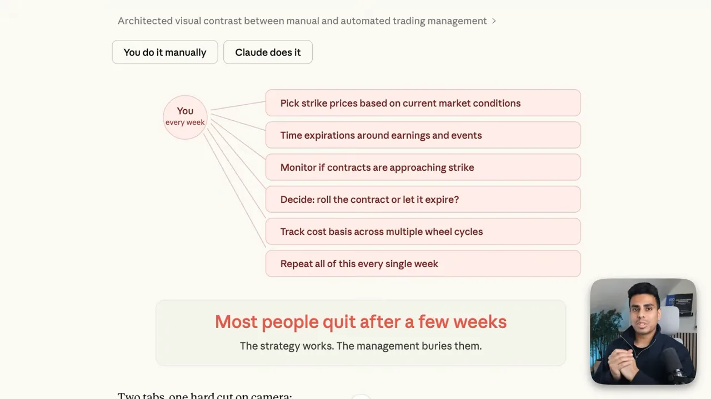
그 관리를 Claude가 맡으면 그림이 바뀌어요. 아래 화면처럼 나는 어떤 종목으로 휠을 돌릴지, 감수할 위험, 선호하는 행사가격만 한 번 알려 줘요. 그러면 Claude가 행사가격 고르기, 만기 정하기, 24시간 가격 감시, 계약 롤오버, 취득 단가 추적, 프리미엄 받기를 모두 처리해요.
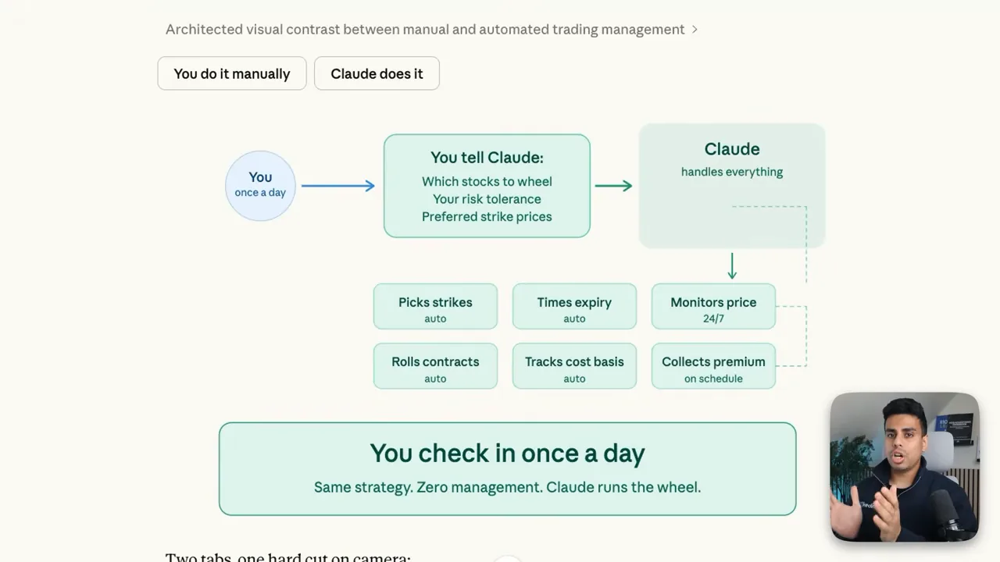
휠 전략 봇 프롬프트
발표자는 첫 번째 모의투자 계좌(Trading claud)로 돌아가, 미리 써 둔 휠 전략 프롬프트를 Claude에 붙여 넣고 소리 내어 읽어 줘요. 내용을 단계와 규칙으로 나누면 아래 표와 같아요.
| 구분 | 프롬프트 내용 |
|---|---|
| 1단계: 풋 팔기 | Tesla 현금 담보 풋을 현재가보다 약 10% 낮은 행사가격으로 팔아요. 만기는 2~4주 뒤. 그냥 만료되면 또 팔아요. 배정되면 2단계로 가요. |
| 2단계: 콜 팔기 | 주식을 가지면 산 가격보다 약 10% 높은 행사가격으로 커버드 콜을 팔아요. 만기는 2~4주 뒤. 그냥 만료되면 또 팔고, 주식이 팔리면 1단계로 돌아가요. |
| 규칙 | 배정되면 살 현금이 없는 한 풋을 팔지 않아요. 취득 단가보다 낮은 행사가격으로 콜을 팔지 않아요. |
| 감시 | 모든 바퀴의 프리미엄을 기록하고, 장중 15분마다 포지션을 확인해요. |
| 조기 청산 | 계약이 만기 전에 50% 이익에 닿으면 일찍 정리하고 새로 팔아요. |
| 보고 | 장 마감에 현재 단계, 받은 프리미엄, 포지션, 총수익을 요약해요. 장 밖에서는 아무것도 하지 않아요. |
두 규칙이 이 프롬프트의 안전장치예요. 살 돈이 없는데 풋을 팔면 배정됐을 때 감당이 안 되고, 취득 단가 아래로 콜을 팔면 주식이 넘어갈 때 손해를 확정하게 되니까요.
아래 화면 위쪽 표는 지금까지 만든 봇들이 어떻게 돌고 있는지 보여 줘요. Tesla 트레일링 스톱 감시(장중 5분마다), 의원 거래 알림(평일 매일 오전 10시), 필요할 때 부르는 Capitol Trades 분석 스크립트, 실행마다 갱신되는 스냅샷 파일이에요. 아래 입력창에는 방금 읽은 휠 전략 프롬프트의 끝부분이 보여요.
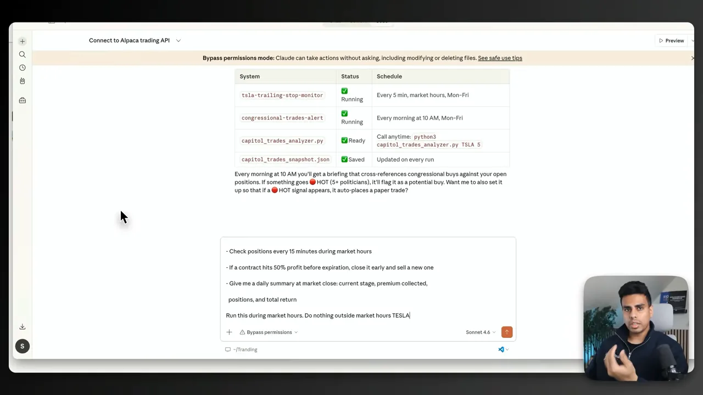
발표자는 실행 버튼을 누른 뒤, 이 작업도 일정에 걸려 계속 돌 거라고 말해요. 그리고 모의투자 계좌를 만들어 직접 돌려 보고 어떻게 되는지 보라고 권하며 마무리해요.